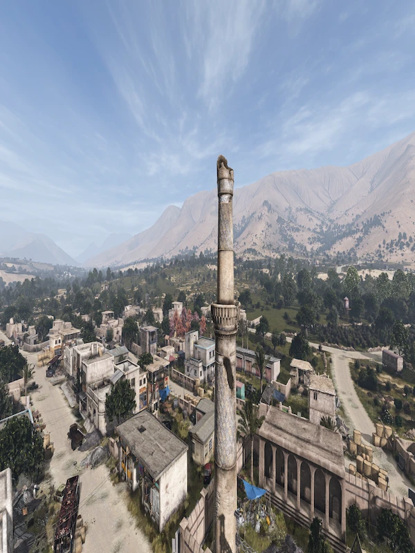
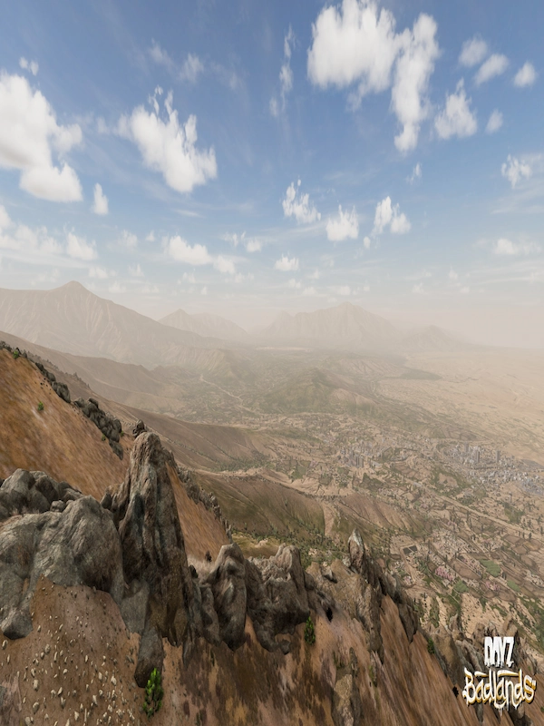
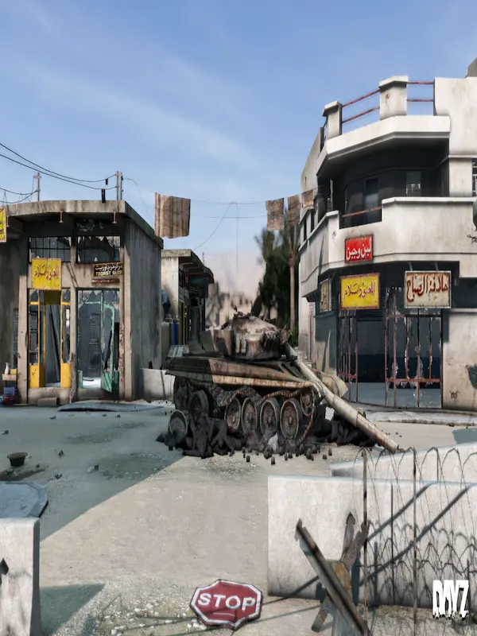
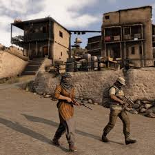
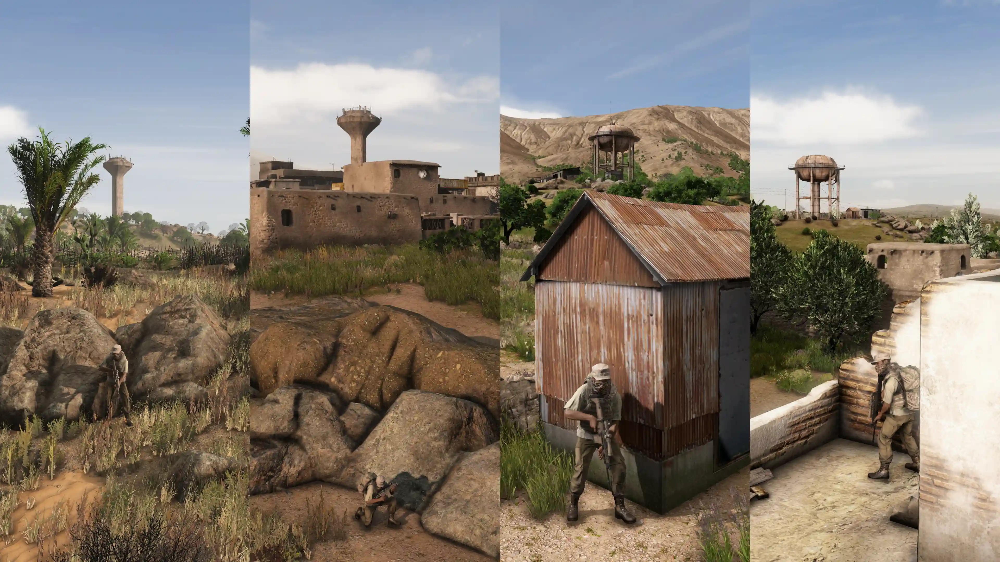
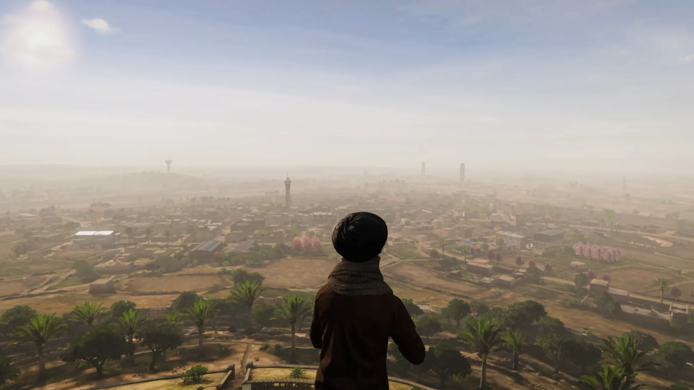

The DayZ day has finally arrived. We now know who, what, when and where the new dayz
badlands map is going to be released. DayZ Badlands is set to release in the desert heat.
Along with the new update for dayz came some items we will be seeing a lot of in this years
massive open world survivor game. Battling high tempratures during the day and colder tempratures
at night make for a really challenging scenario for even the most seasoned dayz veteran. We can expect dayz
badlands to release in october followed by GTA6 later the following month. Badlands will be one of
the largest maps that the bohemia interactive team has everlaunched. The name Of the map is
NASDARA, the size of the map will be an impressive 267km with some of the most brutal terrain
we have likely ever seen in all of the dayz maps. At the time of this article we do not know
the exact day of the release, but it is confirmed by the dayz developers that it is in fact
going to be OCTOBER of 2026. Less than 90 days away.
DayZ Badlands Release Date



October of 2026 is the set release date as of august 2026. With the latest information on the dayz badlands release date we have seen the capabilities of
the new weapons, some of the gear, code locks and weather. That is the very least of it though.
As we get closer we are noticing the rough dynamic water events that may take place as (dayz water trucks).
Rough sandstorms, and as of recently the brief glimpse of underground tunnels. Dayz maps and loot
will most certainly become a harder thing to come by as the size of this new dayz map is 267 square kilometers (103 square miles.)
When Does dayz badlands come out?



Badland vs Sakhal. Sakhal was the latest map released, and it is even smaller than Livonia. The map is dedicated to extreme
survival players, offering a full-blown sub-arctic survival and PvP experience set to test how players handle the
cold freezing tempratures of the arctics. We may have some speculation of the exact release
date of the new map badlands based off of when they released the last map. Frostline was
released on october 15th 2024. It seems as if the dayz developers plan on doing the same for the
newer map because they just confirmed that it will be coming out in october of this year. If the dayz
update would follow the pattern of sakhal release that means we are only 90 days away
from the actual release.
Middle Age Strategy Games
1.29 dayz update roadmap can be found on almost all of the wobo sites.
From how to make a fire in the dayz badlands map to any other map that you may want
to learn about wobo is the guy you want to look up.This standalone Map can make or
have deadly tempratures. The DayZ Badlands map is releasing this year!
To prepare for that map, we have made the summer on this map mimick
the Miami,FL area. If you get too hot, change clothes. You can also go
into the water for a quick cooldown. DayZ Badlands is set to release in october, we finally
have a release date! Good Luck out there in the heat survivors!